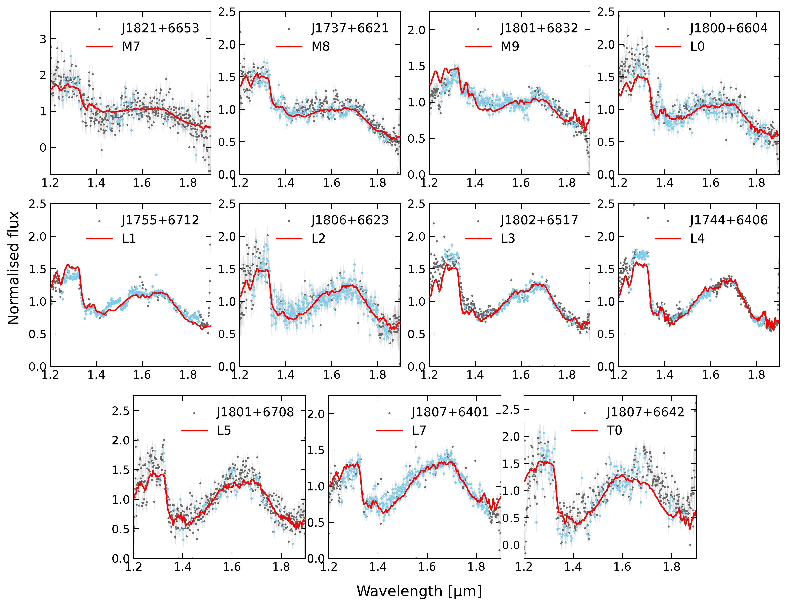
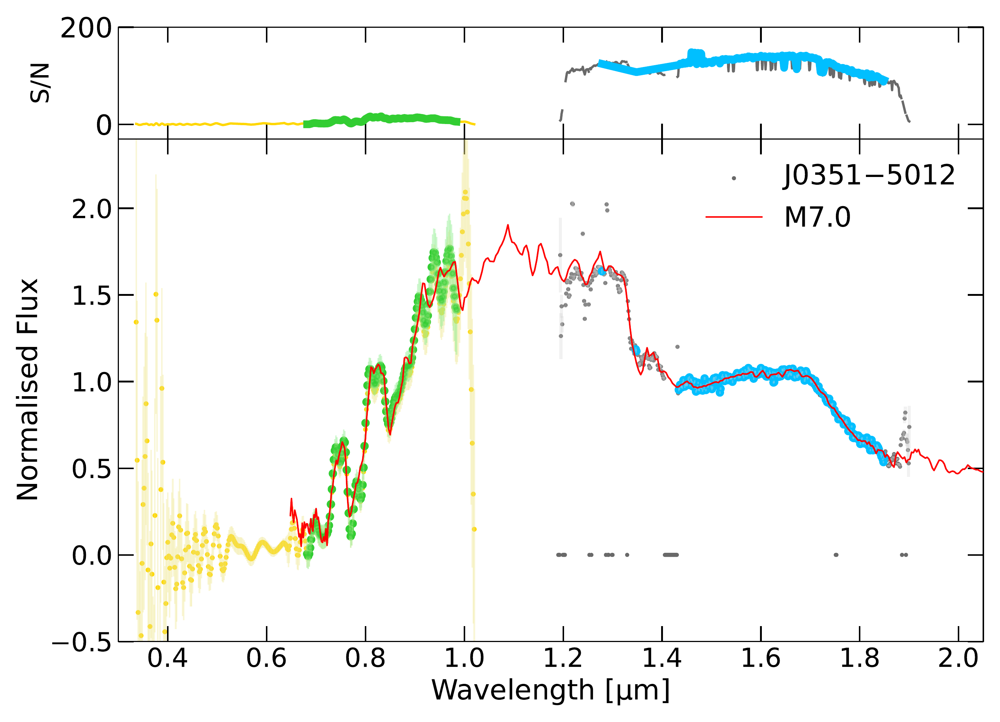
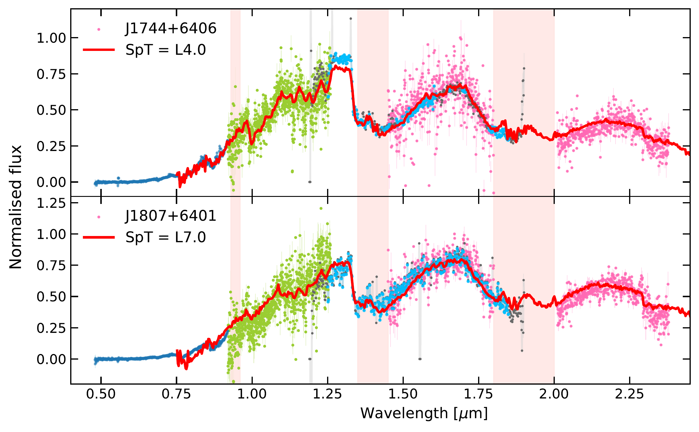
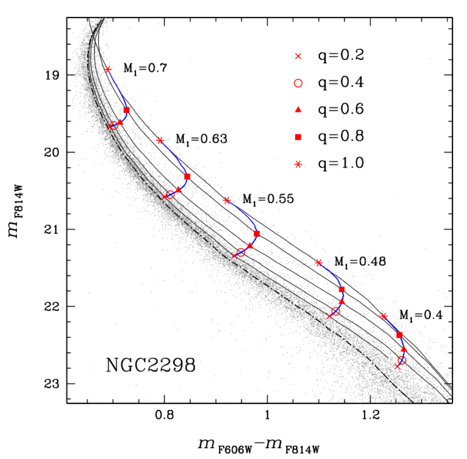
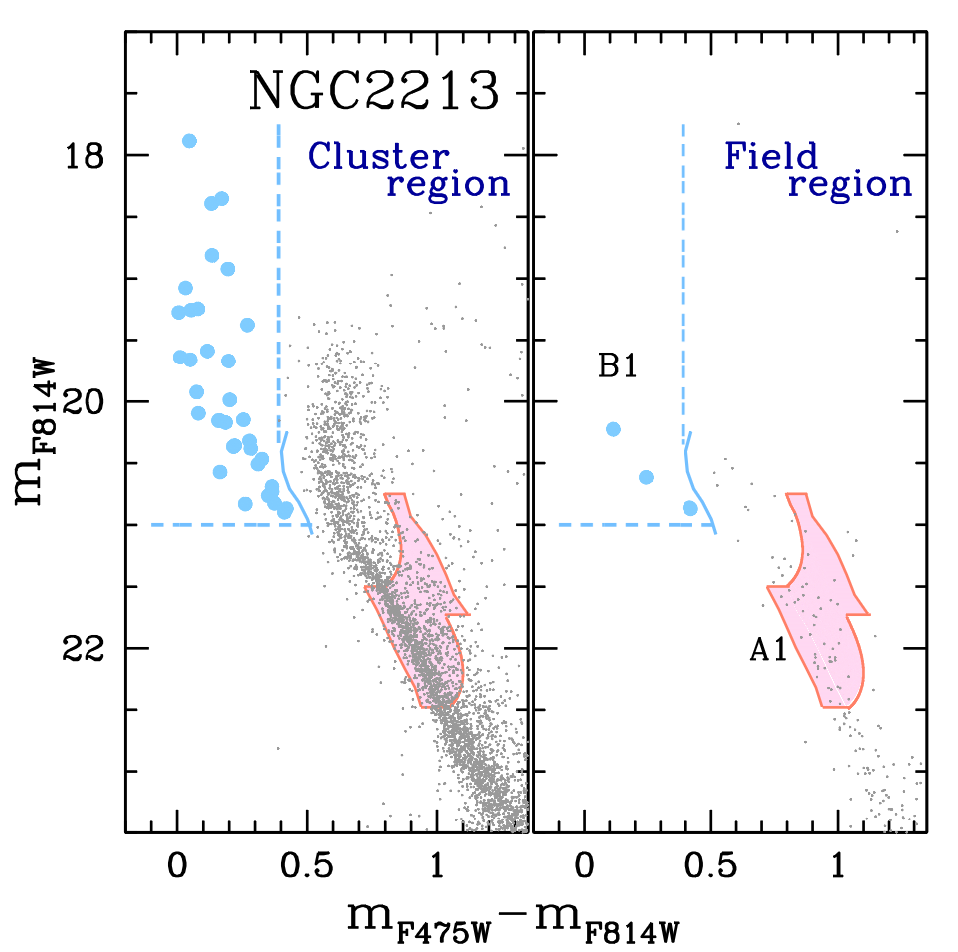
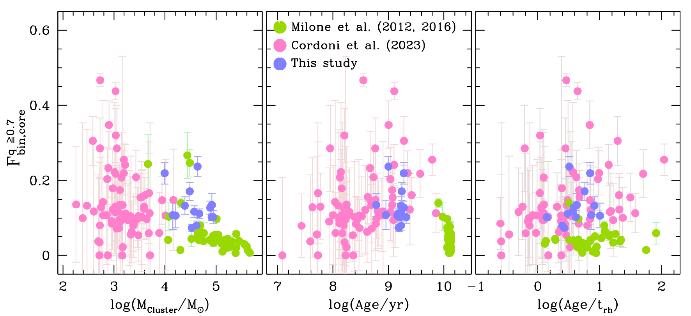

Exploring ultracool dwarfs with Euclid and Gaia
Ultracool dwarfs (UCDs) are the coldest, faintest and least massive products of star formation. Comprising the lowest-mass stars and brown dwarfs at the stellar–substellar boundary (Teff ≲ 2800 K), they are among the most abundant objects in the Galaxy, yet they remain elusive in local volume censuses due to their intrinsic faintness and peak emission in the near-infrared (NIR).
With its wide-area coverage and deep NIR sensitivity, the Euclid space mission is transforming substellar astrophysics by uncovering populations beyond the reach of optical surveys or ground based telescopes. Using data from the Euclid Quick Data Release (Q1) across the ~60 deg2 Euclid Deep Fields, we analysed ~600 UCDs spectroscopically, including ~200 new candidate UCDs in the the 23 deg2 of Euclid Deep Field North (EDFN), which were flagged as contaminants in distant quasar searches. Through quality-mask filtering and template fitting of Euclid NISP red-grism spectra, we spectroscopically confirmed 33 new ultracool dwarfs spanning spectral types M7 to T1, alongside notable peculiar candidates such as low-surface-gravity young brown dwarfs and late-T dwarfs (Figure 1).


Gaia BP/RP and Euclid NISP spectrum for a benchmark UCD" onerror="this.src='https://via.placeholder.com/450x300/0a0c10/94a3b8?text=Figure+2:+Gaia+%2B+Euclid+SED'">To push our characterisation further, we combined Euclid NIR spectra with optical spectra and parallaxes from Gaia DR3 (Figure 2). Spanning a continuous optical-to-NIR baseline eliminates single-band systematic biases in atmospheric model fitting, enabling robust derivations of stellar parameters such as effective temperatures, surface gravities, and stellar radii. Together, these validated methods and our publicly available catalogs establish an essential benchmark for large-scale substellar population studies as Euclid expands into its wide-field data releases.
For two of the newly detected UCDs ground based spectroscopic follow-up was performed using EMIR and OSIRIS+ instruments aboard Gran Telescopio Canarias. Figure 3 shows the observations match with UCD template corresponding to the Euclid spectral types and are in agreement with Euclid NISP spectra. This served as an independent validation of our Euclid spectra based UCD detection and characterisation method.

Photometric binaries in Galactic & extragalactic star clusters
During my doctoral studies at the Department of Astronomy, University of Padova, I investigated binary fractions in the context of stellar evolution and dynamics in Magellanic Cloud globular clusters. The work leveraged high-precision astrometry and multi-band photometry from Hubble space telescope to map spatial distributions and dynamical signatures within clusters.


Gaia BP/RP and Euclid NISP spectrum for a benchmark UCD" style="width: 80%; display: block; margin: 0 auto;" onerror="this.src='https://via.placeholder.com/450x300/0a0c10/94a3b8?text=Figure+2:+Gaia+%2B+Euclid+SED'">Using high-precision Hubble Space Telescope colour-magnitude diagrams (CMDs), we separated cluster populations into single stars, binary systems, and background contaminants. The radial distribution, mass distribution and mass ratio distributions of the binaries are mapped. This technique enabled robust mass function determinations across the low-mass regime down to the hydrogen-burning boundary within dense star cluster environments.
Additionally, we explored the exotic stellar populations with binary origin, such as blue straggler tar (BSS) in complex. By exploring BSS radial profiles with respect to age and dynamical age of the cluster, we investigated stellar collisions shape the evolution of exotic stellar populations in globular clusters.
Within the GALFOR groups at Padova, we carried out a homogeneous analysis of the main-sequence binaries across 159 globular and open clusters in both the Milky Way and Magellanic Clouds. By accessing binary populations across different structural environments, mass distributions, and ages, we identified key anti-correlations between core binary fraction and cluster mass, indicating at the key influence of collisional disruption events in shaping the binary profiles in the cluster environment.

Computational & Analysis Stack
Python ecosystem (astropy, pandas, numpy, scipy, matplotlib, SPLAT, gaiaxpy, SEDA), ADQL/SQL database querying, OAR cluster batch processing, membership classifiers (BANYAN \sigma), and orbital integration packages (GravPot2022 and AGAMA).